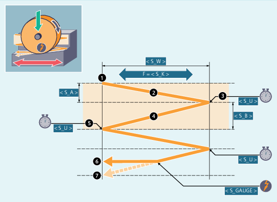
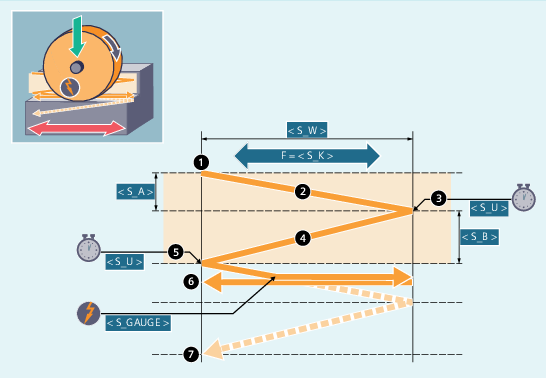

Syntax
CYCLE4074(<S_GAUGE>, <S_A>, <S_B>, <S_W>, <S_U>, <S_K>, <S_H>, <S_A1>, <S_A2>)Parameters
No. | Parameter | Data type | Meaning |
|---|---|---|---|
1 |
| STRING | Cancel conditions for infeed:
|
2 |
| REAL | Infeed depth at the start |
3 |
| REAL | Infeed depth at the end |
4 |
| REAL | Grinding width |
5 |
| REAL | Sparking-out time |
6 |
| REAL | Feedrate for transverse infeed |
7 |
| INT | Number of repetitions |
8 |
| AXIS | Infeed axis (optional) or 1st geometry axis |
9 |
| AXIS | Oscillating axis (optional) or 2nd geometry axis |
Function
The cycle is used for the execution of repeating infeeds taking into account e.g. an external cancel signal. The infeed depth can be different at the start and at the end. The depth infeed is cancelled when the cancel condition is satisfied. A complete stroke is always performed after the cancellation of the depth infeed.
Sequence
Cancellation of the infeed from the end to the start
Cancellation of the infeed from the start to the end
| Note |
The sequence cannot be interrupted with a single block. |
Resources
As resources, the cycle uses a block-wide synchronized action and a synchronized action variable. The synchronized action is determined dynamically from the free area of the synchronized action range (CUS.DIR - 1 ..., CMA.DIR - 1000 ..., CST.DIR – 1199 ...). SYG_IS[1] is used as the synchronized action variable.
Examples
Example 1: Oscillation with two strokes:
Cycle parameters
Infeed depth at the start: 0.02 mm
Infeed depth at the end: 0.01 mm
Stroke: 100 mm
Sparking-out time: 1 s
Transverse feedrate: 1000 mm/min
Repetitions: 2
Oscillating and infeed axes: Standard geometry axes
Cancel signal: Rapid input 1 ($A_IN[1] )
Program code |
|---|
| N10 T1 D1 |
| N20 CYCLE4074("1",0.02,0.01,100,1,1000,2) |
| N30 M30 |
Example 2: Oscillation with two strokes:
Cycle parameters
Infeed depth at the start: 0.02 mm
Infeed depth at the end: 0.01 mm
Stroke: 100 mm
Sparking-out time: 1 s
Transverse feedrate: 1000 mm/min
Repetitions: 2
Oscillating and infeed axes: Standard geometry axes
Cancel signal: Variable $A_DBR[20] < 0.01
Program code |
|---|
| N10 T1 D1 |
| N20 CYCLE4074("($A_DBR[20]<0.01)",0.02,0.01,100,1,1000,2) |
| N30 M30 |